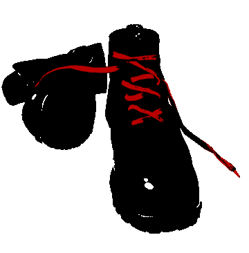
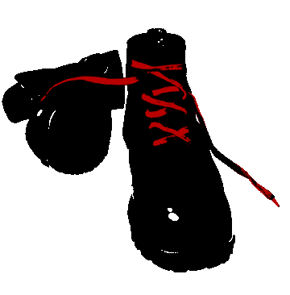

Приложение 2
Некоторые заявления и коммюнике, опубликованные в антифашистских фэнзинах
Погром в штаб-квартире PHE
Антифашисты и анархо-панки в количестве около 25-ти человек в субботу 25-го декабря 1999 года атаковали волгоградскую штаб-квартиру РНЕ, расположенную на улице Пархоменко, 47. Всё было отснято журналистами с телевидения и в понедельник вышло в эфир. Видно было, как панки с замаскированными лицами долбят лампы, окна и мебель. После всего из штаба выбежал баркашовец в чёрной рубашке и стал выступать перед камерой. Схватив одного панка с банданой на лице, который давал интервью после акции, он сказал: «Ну всё, этот панк за всё заплатит». Но двое друзей панка отбили его у фашика. Брызнув ему в лицо из газового баллончика, они ретировались.
В принципе, акцию надо было провести ещё давно, когда эти баркашовские мрази появились в городе. На этот раз поводом к атаке послужил отказ фроловских властей в проведении ночного предновогоднего сейшена. Мэра города Фролово напрягли какие-то местные национал-патриоты, и он легко разделил их мнение, сказав, что «нерусская музыка нам не нужна», имея в виду панк-рок. Вот если бы это был ночной концерт на русских народных инструментах, то тогда всегда пожалуйста, милости просим. И вот панки, так и не уехав во Фролово, ломанулись к местным «патриотам» в гости. Наша музыка никому не нужна, кроме нас самих. Наша культура чужая для них. Они отказали нам в праве на существование, но от этого панков не стало меньше. Это, можно сказать, первая серьёзная акция против PHE в Волгоградской области.
Акция «Чурок»
1 июня 2001 года была проведена контр-акция против фашистского шествия «В защиту русских детей» и за запрещение абортов, организованного Сергеем «Пауком» Троицким. Группа антифашистов закидала нациков яйцами и вылила на них баклажку смеси из тухлого кефира, кетчупа и яиц.
Участники антифа-акции сожалеют лишь о том, что эффект от их акции был не слишком большим. Тем не менее, они испортили фашистам праздник. Нацисты все же продолжили свое шествие по улицам Москвы, и на последующем митинге заявили, что акцию против них провели «чурки». Прознав об этом антифашисты взяли себе это гордое прозвище и выпустили следующее коммюнике:
Коммюнике 1
Боевая антифашистская группа «Чурки» провела в Москве акцию яйце- и кефирометания в защиту детей от русских фашистов. Активисты-чурки напали на марш, организованный националистическими группами, в том числе президентом Корпорации Тяжелого Рока Сергеем «Пауком» Троицким. Главный виновник торжества на этот раз избежал справедливой мести. Но это ненадолго.
Боевая антифашистская организация «Чурки» заявляет о своей решимости продолжить борьбу. Трепещите, фашисты! Волна праведного народного гнева накроет вас, это только вопрос времени! Фашизм – дерьмо! Националистические марши в Москве больше не будут безопасными для здоровья марширующих!
1 июня 2001 г.
Боевая антифашистская группа «Чурки»
О потасовке около метро «Академическая»
Версия администраторов www.redskin.newmail.ru
По сообщениям прессы, в ночь с субботы на воскресенье (16 февраля 2003 г.) в Москве у входа в метро «Академическая» группа «футбольных фанатов» была атакована другой группой молодых людей, вооруженных ножами и арматурой. В результате несколько «футбольных фанатов» были доставлены в больницы с серьезными ранениями. По мнению потерпевших (приведенному, в частности, в заметке в «Известиях» http://www.izvestia.ru/incidents/article30145 и на ультраправом сайте www.dpni.org), нападение осуществили антифашисты.
Надо сказать, что станция метро «Академическая» давно известна в Москве как место сборов подростков, придерживающихся неонацистских взглядов. Так что сами по себе пьяные драки и дебоши там не являются редкостью. Администраторы www.redskin.newmail.ru не располагают информацией о том, кто совершил нападение 16 февраля. Также вызывает удивление факт использования ножей и арматуры против почти детей.
Эта история лишний раз показывает, насколько накалены сегодня межнациональные отношения в Москве. В частности, уличное насилие расистов приобрело настолько массовый характер (не встречая на практике какого-либо адекватного отпора со стороны правоохранительных органов), что не стоит удивляться появлению всё большего числа людей, готовых обеспечивать свою безопасность всеми доступными средствами.